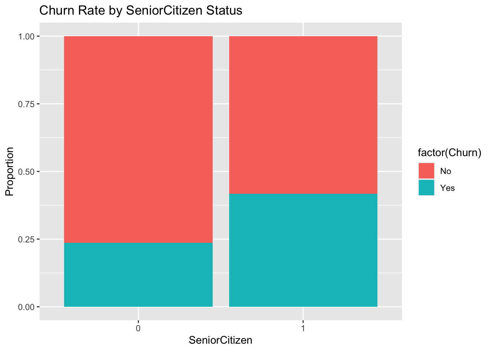
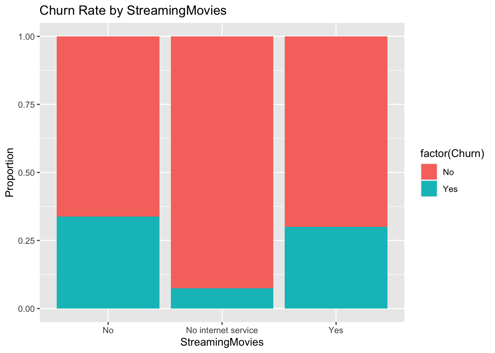
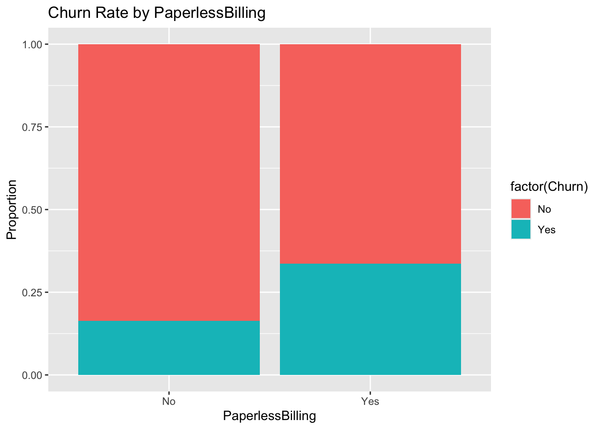
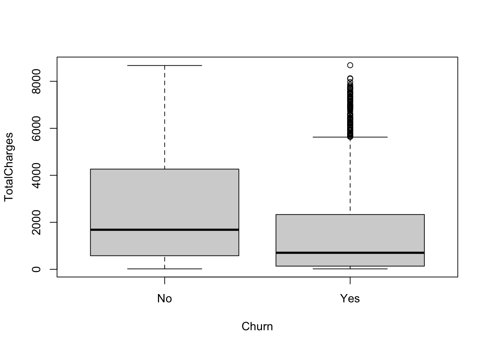

library(tidyverse)
library(car)
library(klaR)
library(lmtest)
library(car)
library(ROCR)
library(MASS)
library(tree)
library(randomForest)Descriptive Analysis
This section is an initial data analysis of all variables as an early assessment of fit for predictive modeling.
Summary Statistics
churn <- read_csv('WA_Fn-UseC_-Telco-Customer-Churn.csv')
# look at NA values - might be able to compute regression model to impute those values
glimpse(churn)Rows: 7,043
Columns: 21
$ customerID <chr> "7590-VHVEG", "5575-GNVDE", "3668-QPYBK", "7795-CFOCW…
$ gender <chr> "Female", "Male", "Male", "Male", "Female", "Female",…
$ SeniorCitizen <dbl> 0, 0, 0, 0, 0, 0, 0, 0, 0, 0, 0, 0, 0, 0, 0, 0, 0, 0,…
$ Partner <chr> "Yes", "No", "No", "No", "No", "No", "No", "No", "Yes…
$ Dependents <chr> "No", "No", "No", "No", "No", "No", "Yes", "No", "No"…
$ tenure <dbl> 1, 34, 2, 45, 2, 8, 22, 10, 28, 62, 13, 16, 58, 49, 2…
$ PhoneService <chr> "No", "Yes", "Yes", "No", "Yes", "Yes", "Yes", "No", …
$ MultipleLines <chr> "No phone service", "No", "No", "No phone service", "…
$ InternetService <chr> "DSL", "DSL", "DSL", "DSL", "Fiber optic", "Fiber opt…
$ OnlineSecurity <chr> "No", "Yes", "Yes", "Yes", "No", "No", "No", "Yes", "…
$ OnlineBackup <chr> "Yes", "No", "Yes", "No", "No", "No", "Yes", "No", "N…
$ DeviceProtection <chr> "No", "Yes", "No", "Yes", "No", "Yes", "No", "No", "Y…
$ TechSupport <chr> "No", "No", "No", "Yes", "No", "No", "No", "No", "Yes…
$ StreamingTV <chr> "No", "No", "No", "No", "No", "Yes", "Yes", "No", "Ye…
$ StreamingMovies <chr> "No", "No", "No", "No", "No", "Yes", "No", "No", "Yes…
$ Contract <chr> "Month-to-month", "One year", "Month-to-month", "One …
$ PaperlessBilling <chr> "Yes", "No", "Yes", "No", "Yes", "Yes", "Yes", "No", …
$ PaymentMethod <chr> "Electronic check", "Mailed check", "Mailed check", "…
$ MonthlyCharges <dbl> 29.85, 56.95, 53.85, 42.30, 70.70, 99.65, 89.10, 29.7…
$ TotalCharges <dbl> 29.85, 1889.50, 108.15, 1840.75, 151.65, 820.50, 1949…
$ Churn <chr> "No", "No", "Yes", "No", "Yes", "Yes", "No", "No", "Y…# Removes 21 observations
churn <- na.omit(churn)
glimpse(churn)Rows: 7,032
Columns: 21
$ customerID <chr> "7590-VHVEG", "5575-GNVDE", "3668-QPYBK", "7795-CFOCW…
$ gender <chr> "Female", "Male", "Male", "Male", "Female", "Female",…
$ SeniorCitizen <dbl> 0, 0, 0, 0, 0, 0, 0, 0, 0, 0, 0, 0, 0, 0, 0, 0, 0, 0,…
$ Partner <chr> "Yes", "No", "No", "No", "No", "No", "No", "No", "Yes…
$ Dependents <chr> "No", "No", "No", "No", "No", "No", "Yes", "No", "No"…
$ tenure <dbl> 1, 34, 2, 45, 2, 8, 22, 10, 28, 62, 13, 16, 58, 49, 2…
$ PhoneService <chr> "No", "Yes", "Yes", "No", "Yes", "Yes", "Yes", "No", …
$ MultipleLines <chr> "No phone service", "No", "No", "No phone service", "…
$ InternetService <chr> "DSL", "DSL", "DSL", "DSL", "Fiber optic", "Fiber opt…
$ OnlineSecurity <chr> "No", "Yes", "Yes", "Yes", "No", "No", "No", "Yes", "…
$ OnlineBackup <chr> "Yes", "No", "Yes", "No", "No", "No", "Yes", "No", "N…
$ DeviceProtection <chr> "No", "Yes", "No", "Yes", "No", "Yes", "No", "No", "Y…
$ TechSupport <chr> "No", "No", "No", "Yes", "No", "No", "No", "No", "Yes…
$ StreamingTV <chr> "No", "No", "No", "No", "No", "Yes", "Yes", "No", "Ye…
$ StreamingMovies <chr> "No", "No", "No", "No", "No", "Yes", "No", "No", "Yes…
$ Contract <chr> "Month-to-month", "One year", "Month-to-month", "One …
$ PaperlessBilling <chr> "Yes", "No", "Yes", "No", "Yes", "Yes", "Yes", "No", …
$ PaymentMethod <chr> "Electronic check", "Mailed check", "Mailed check", "…
$ MonthlyCharges <dbl> 29.85, 56.95, 53.85, 42.30, 70.70, 99.65, 89.10, 29.7…
$ TotalCharges <dbl> 29.85, 1889.50, 108.15, 1840.75, 151.65, 820.50, 1949…
$ Churn <chr> "No", "No", "Yes", "No", "Yes", "Yes", "No", "No", "Y…summary(churn) customerID gender SeniorCitizen Partner
Length:7032 Length:7032 Min. :0.0000 Length:7032
Class :character Class :character 1st Qu.:0.0000 Class :character
Mode :character Mode :character Median :0.0000 Mode :character
Mean :0.1624
3rd Qu.:0.0000
Max. :1.0000
Dependents tenure PhoneService MultipleLines
Length:7032 Min. : 1.00 Length:7032 Length:7032
Class :character 1st Qu.: 9.00 Class :character Class :character
Mode :character Median :29.00 Mode :character Mode :character
Mean :32.42
3rd Qu.:55.00
Max. :72.00
InternetService OnlineSecurity OnlineBackup DeviceProtection
Length:7032 Length:7032 Length:7032 Length:7032
Class :character Class :character Class :character Class :character
Mode :character Mode :character Mode :character Mode :character
TechSupport StreamingTV StreamingMovies Contract
Length:7032 Length:7032 Length:7032 Length:7032
Class :character Class :character Class :character Class :character
Mode :character Mode :character Mode :character Mode :character
PaperlessBilling PaymentMethod MonthlyCharges TotalCharges
Length:7032 Length:7032 Min. : 18.25 Min. : 18.8
Class :character Class :character 1st Qu.: 35.59 1st Qu.: 401.4
Mode :character Mode :character Median : 70.35 Median :1397.5
Mean : 64.80 Mean :2283.3
3rd Qu.: 89.86 3rd Qu.:3794.7
Max. :118.75 Max. :8684.8
Churn
Length:7032
Class :character
Mode :character
Outcome Variable
table(churn$Churn)
No Yes
5163 1869 There are many more observations for customers who did not churn, which may make any model biased towards predicting no churn.
Character Variables
# Select character variables
names(churn)[map_lgl(churn, is.character)] [1] "customerID" "gender" "Partner" "Dependents"
[5] "PhoneService" "MultipleLines" "InternetService" "OnlineSecurity"
[9] "OnlineBackup" "DeviceProtection" "TechSupport" "StreamingTV"
[13] "StreamingMovies" "Contract" "PaperlessBilling" "PaymentMethod"
[17] "Churn" # create a vector of character variables
char_vars <- c("gender","Partner","Dependents","PhoneService","MultipleLines","InternetService","OnlineSecurity","OnlineBackup","DeviceProtection","TechSupport","StreamingTV","StreamingMovies","Contract","PaperlessBilling","PaymentMethod")Category Counts
This section checks to see if there are any categories with very few observations for each of the categorical variables.
for (var in char_vars) {
print(var)
print(table(churn[[var]]))
}[1] "gender"
Female Male
3483 3549
[1] "Partner"
No Yes
3639 3393
[1] "Dependents"
No Yes
4933 2099
[1] "PhoneService"
No Yes
680 6352
[1] "MultipleLines"
No No phone service Yes
3385 680 2967
[1] "InternetService"
DSL Fiber optic No
2416 3096 1520
[1] "OnlineSecurity"
No No internet service Yes
3497 1520 2015
[1] "OnlineBackup"
No No internet service Yes
3087 1520 2425
[1] "DeviceProtection"
No No internet service Yes
3094 1520 2418
[1] "TechSupport"
No No internet service Yes
3472 1520 2040
[1] "StreamingTV"
No No internet service Yes
2809 1520 2703
[1] "StreamingMovies"
No No internet service Yes
2781 1520 2731
[1] "Contract"
Month-to-month One year Two year
3875 1472 1685
[1] "PaperlessBilling"
No Yes
2864 4168
[1] "PaymentMethod"
Bank transfer (automatic) Credit card (automatic) Electronic check
1542 1521 2365
Mailed check
1604 While there are some variables that have an imbalance of counts for each category, for the most part, every categorical variable has enough observations with in each category.
Chi Square Test Bar Plots
table(churn$gender,churn$Churn)
No Yes
Female 2544 939
Male 2619 930chisq.test(table(churn$gender,churn$Churn))
Pearson's Chi-squared test with Yates' continuity correction
data: table(churn$gender, churn$Churn)
X-squared = 0.47545, df = 1, p-value = 0.4905ggplot(churn, aes(x = factor(gender), fill = factor(Churn))) +
geom_bar(position = "fill") +
labs(title = "Churn Rate by Gender", x = "Gender", y = "Proportion")
table(churn$SeniorCitizen,churn$Churn)
No Yes
0 4497 1393
1 666 476chisq.test(table(churn$SeniorCitizen,churn$Churn))
Pearson's Chi-squared test with Yates' continuity correction
data: table(churn$SeniorCitizen, churn$Churn)
X-squared = 158.44, df = 1, p-value < 2.2e-16ggplot(churn, aes(x = factor(SeniorCitizen), fill = factor(Churn))) +
geom_bar(position = "fill") +
labs(title = "Churn Rate by SeniorCitizen Status", x = "SeniorCitizen", y = "Proportion")
table(churn$Partner,churn$Churn)
No Yes
No 2439 1200
Yes 2724 669chisq.test(table(churn$Partner,churn$Churn))
Pearson's Chi-squared test with Yates' continuity correction
data: table(churn$Partner, churn$Churn)
X-squared = 157.5, df = 1, p-value < 2.2e-16ggplot(churn, aes(x = factor(Partner), fill = factor(Churn))) +
geom_bar(position = "fill") +
labs(title = "Churn Rate by Partner Status", x = "Partner", y = "Proportion")table(churn$Dependents,churn$Churn)
No Yes
No 3390 1543
Yes 1773 326chisq.test(table(churn$Dependents,churn$Churn))
Pearson's Chi-squared test with Yates' continuity correction
data: table(churn$Dependents, churn$Churn)
X-squared = 186.32, df = 1, p-value < 2.2e-16ggplot(churn, aes(x = factor(Dependents), fill = factor(Churn))) +
geom_bar(position = "fill") +
labs(title = "Churn Rate by Dependents", x = "Dependents", y = "Proportion")table(churn$PhoneService,churn$Churn)
No Yes
No 510 170
Yes 4653 1699chisq.test(table(churn$PhoneService,churn$Churn))
Pearson's Chi-squared test with Yates' continuity correction
data: table(churn$PhoneService, churn$Churn)
X-squared = 0.87373, df = 1, p-value = 0.3499ggplot(churn, aes(x = factor(PhoneService), fill = factor(Churn))) +
geom_bar(position = "fill") +
labs(title = "Churn Rate by PhoneService", x = "PhoneService", y = "Proportion")table(churn$MultipleLines,churn$Churn)
No Yes
No 2536 849
No phone service 510 170
Yes 2117 850chisq.test(table(churn$MultipleLines,churn$Churn))
Pearson's Chi-squared test
data: table(churn$MultipleLines, churn$Churn)
X-squared = 11.272, df = 2, p-value = 0.003568ggplot(churn, aes(x = factor(MultipleLines), fill = factor(Churn))) +
geom_bar(position = "fill") +
labs(title = "Churn Rate by MultipleLines", x = "MultipleLines", y = "Proportion")table(churn$InternetService,churn$Churn)
No Yes
DSL 1957 459
Fiber optic 1799 1297
No 1407 113chisq.test(table(churn$InternetService,churn$Churn))
Pearson's Chi-squared test
data: table(churn$InternetService, churn$Churn)
X-squared = 728.7, df = 2, p-value < 2.2e-16ggplot(churn, aes(x = factor(InternetService), fill = factor(Churn))) +
geom_bar(position = "fill") +
labs(title = "Churn Rate by InternetService", x = "InternetService", y = "Proportion") 
table(churn$OnlineSecurity,churn$Churn)
No Yes
No 2036 1461
No internet service 1407 113
Yes 1720 295chisq.test(table(churn$OnlineSecurity,churn$Churn))
Pearson's Chi-squared test
data: table(churn$OnlineSecurity, churn$Churn)
X-squared = 846.68, df = 2, p-value < 2.2e-16ggplot(churn, aes(x = factor(OnlineSecurity), fill = factor(Churn))) +
geom_bar(position = "fill") +
labs(title = "Churn Rate by OnlineSecurity", x = "OnlineSecurity", y = "Proportion") 
table(churn$OnlineBackup,churn$Churn)
No Yes
No 1854 1233
No internet service 1407 113
Yes 1902 523chisq.test(table(churn$OnlineBackup,churn$Churn))
Pearson's Chi-squared test
data: table(churn$OnlineBackup, churn$Churn)
X-squared = 599.18, df = 2, p-value < 2.2e-16ggplot(churn, aes(x = factor(OnlineBackup), fill = factor(Churn))) +
geom_bar(position = "fill") +
labs(title = "Churn Rate by OnlineBackup", x = "OnlineBackup", y = "Proportion")table(churn$DeviceProtection,churn$Churn)
No Yes
No 1883 1211
No internet service 1407 113
Yes 1873 545chisq.test(table(churn$DeviceProtection,churn$Churn))
Pearson's Chi-squared test
data: table(churn$DeviceProtection, churn$Churn)
X-squared = 555.88, df = 2, p-value < 2.2e-16ggplot(churn, aes(x = factor(DeviceProtection), fill = factor(Churn))) +
geom_bar(position = "fill") +
labs(title = "Churn Rate by DeviceProtection", x = "DeviceProtection", y = "Proportion") table(churn$TechSupport,churn$Churn)
No Yes
No 2026 1446
No internet service 1407 113
Yes 1730 310chisq.test(table(churn$TechSupport,churn$Churn))
Pearson's Chi-squared test
data: table(churn$TechSupport, churn$Churn)
X-squared = 824.93, df = 2, p-value < 2.2e-16ggplot(churn, aes(x = factor(TechSupport), fill = factor(Churn))) +
geom_bar(position = "fill") +
labs(title = "Churn Rate by TechSupport", x = "TechSupport", y = "Proportion") table(churn$StreamingTV,churn$Churn)
No Yes
No 1867 942
No internet service 1407 113
Yes 1889 814chisq.test(table(churn$StreamingTV,churn$Churn))
Pearson's Chi-squared test
data: table(churn$StreamingTV, churn$Churn)
X-squared = 372.46, df = 2, p-value < 2.2e-16ggplot(churn, aes(x = factor(StreamingTV), fill = factor(Churn))) +
geom_bar(position = "fill") +
labs(title = "Churn Rate by StreamingTV", x = "StreamingTV", y = "Proportion") 
table(churn$StreamingMovies,churn$Churn)
No Yes
No 1843 938
No internet service 1407 113
Yes 1913 818chisq.test(table(churn$StreamingMovies,churn$Churn))
Pearson's Chi-squared test
data: table(churn$StreamingMovies, churn$Churn)
X-squared = 374.27, df = 2, p-value < 2.2e-16ggplot(churn, aes(x = factor(StreamingMovies), fill = factor(Churn))) +
geom_bar(position = "fill") +
labs(title = "Churn Rate by StreamingMovies", x = "StreamingMovies", y = "Proportion") 
table(churn$Contract,churn$Churn)
No Yes
Month-to-month 2220 1655
One year 1306 166
Two year 1637 48chisq.test(table(churn$Contract,churn$Churn))
Pearson's Chi-squared test
data: table(churn$Contract, churn$Churn)
X-squared = 1179.5, df = 2, p-value < 2.2e-16ggplot(churn, aes(x = factor(Contract), fill = factor(Churn))) +
geom_bar(position = "fill") +
labs(title = "Churn Rate by Contract", x = "Contract", y = "Proportion") table(churn$PaperlessBilling,churn$Churn)
No Yes
No 2395 469
Yes 2768 1400chisq.test(table(churn$PaperlessBilling,churn$Churn))
Pearson's Chi-squared test with Yates' continuity correction
data: table(churn$PaperlessBilling, churn$Churn)
X-squared = 256.87, df = 1, p-value < 2.2e-16ggplot(churn, aes(x = factor(PaperlessBilling), fill = factor(Churn))) +
geom_bar(position = "fill") +
labs(title = "Churn Rate by PaperlessBilling", x = "PaperlessBilling", y = "Proportion") 
table(churn$PaymentMethod,churn$Churn)
No Yes
Bank transfer (automatic) 1284 258
Credit card (automatic) 1289 232
Electronic check 1294 1071
Mailed check 1296 308chisq.test(table(churn$PaymentMethod,churn$Churn))
Pearson's Chi-squared test
data: table(churn$PaymentMethod, churn$Churn)
X-squared = 645.43, df = 3, p-value < 2.2e-16ggplot(churn, aes(x = factor(PaymentMethod), fill = factor(Churn))) +
geom_bar(position = "fill") +
labs(title = "Churn Rate by PaymentMethod", x = "PaymentMethod", y = "Proportion") Numeric Variables
BoxPlots
boxplot(MonthlyCharges~Churn, data = churn)boxplot(tenure~Churn, data = churn)
boxplot(TotalCharges~Churn, data = churn)
Distributions
MonthlyCharges, tenure, and TotalCharges
par(mfrow=c(2,3))
hist(churn$MonthlyCharges)
hist(churn$tenure)
hist(churn$TotalCharges)
hist(log(churn$MonthlyCharges))
hist(log(churn$tenure))
hist(log(churn$TotalCharges))
The numeric predictors are not normally distributed which may lead to the model having greater predictor power given certain values of predictors rather than others.
Model Assumptions
Significant predictors
Section A.1.3.2 shows the outcome of chi-square tests to assess the relationship between each variable and the outcome variable, Churn. These tests determined that the following variables are significantly related to Churn: SeniorCitizen, Partner, Dependents, MultipleLines, InternetService, OnlineSecurity, OnlineBackup, DeviceProtection, TechSupport, StreamingTV, StreamingMovies, Contract, PaperlessBilling and PaymentMethod. And all numeric variables, Tenure, MonthlyCharges, and TotalCharges have significantly different means for Churn status.
# Fit an initial model to further determine variable significance.
churn$Churn <- ifelse(churn$Churn == 'Yes',1,0)
churn.fit <- glm(Churn~.-customerID,family=binomial(link="logit"),data = churn)
summary(churn.fit)
Call:
glm(formula = Churn ~ . - customerID, family = binomial(link = "logit"),
data = churn)
Coefficients: (7 not defined because of singularities)
Estimate Std. Error z value Pr(>|z|)
(Intercept) 1.165e+00 8.151e-01 1.430 0.15284
genderMale -2.183e-02 6.480e-02 -0.337 0.73619
SeniorCitizen 2.168e-01 8.453e-02 2.564 0.01033 *
PartnerYes -3.840e-04 7.783e-02 -0.005 0.99606
DependentsYes -1.485e-01 8.973e-02 -1.655 0.09796 .
tenure -6.059e-02 6.236e-03 -9.716 < 2e-16 ***
PhoneServiceYes 1.715e-01 6.487e-01 0.264 0.79153
MultipleLinesNo phone service NA NA NA NA
MultipleLinesYes 4.484e-01 1.773e-01 2.530 0.01142 *
InternetServiceFiber optic 1.747e+00 7.981e-01 2.190 0.02855 *
InternetServiceNo -1.786e+00 8.073e-01 -2.213 0.02691 *
OnlineSecurityNo internet service NA NA NA NA
OnlineSecurityYes -2.054e-01 1.787e-01 -1.150 0.25031
OnlineBackupNo internet service NA NA NA NA
OnlineBackupYes 2.604e-02 1.754e-01 0.148 0.88197
DeviceProtectionNo internet service NA NA NA NA
DeviceProtectionYes 1.474e-01 1.764e-01 0.836 0.40339
TechSupportNo internet service NA NA NA NA
TechSupportYes -1.805e-01 1.806e-01 -0.999 0.31759
StreamingTVNo internet service NA NA NA NA
StreamingTVYes 5.905e-01 3.263e-01 1.810 0.07035 .
StreamingMoviesNo internet service NA NA NA NA
StreamingMoviesYes 5.993e-01 3.267e-01 1.834 0.06658 .
ContractOne year -6.608e-01 1.076e-01 -6.142 8.15e-10 ***
ContractTwo year -1.357e+00 1.764e-01 -7.691 1.46e-14 ***
PaperlessBillingYes 3.424e-01 7.450e-02 4.596 4.31e-06 ***
PaymentMethodCredit card (automatic) -8.779e-02 1.141e-01 -0.770 0.44156
PaymentMethodElectronic check 3.045e-01 9.450e-02 3.222 0.00127 **
PaymentMethodMailed check -5.759e-02 1.149e-01 -0.501 0.61627
MonthlyCharges -4.034e-02 3.176e-02 -1.270 0.20392
TotalCharges 3.289e-04 7.063e-05 4.657 3.20e-06 ***
---
Signif. codes: 0 '***' 0.001 '**' 0.01 '*' 0.05 '.' 0.1 ' ' 1
(Dispersion parameter for binomial family taken to be 1)
Null deviance: 8143.4 on 7031 degrees of freedom
Residual deviance: 5826.3 on 7008 degrees of freedom
AIC: 5874.3
Number of Fisher Scoring iterations: 6require(coefplot)
coefplot(churn.fit)This model indicates that considering all variables available, the following variables are significantly related to Churn.
churn.fit.reduced <- glm(Churn~SeniorCitizen+tenure+MultipleLines+InternetService+Contract+PaperlessBilling+PaymentMethod+TotalCharges,family=binomial(link="logit"),data = churn)
summary(churn.fit.reduced)
Call:
glm(formula = Churn ~ SeniorCitizen + tenure + MultipleLines +
InternetService + Contract + PaperlessBilling + PaymentMethod +
TotalCharges, family = binomial(link = "logit"), data = churn)
Coefficients:
Estimate Std. Error z value Pr(>|z|)
(Intercept) -0.7524686 0.1216481 -6.186 6.19e-10 ***
SeniorCitizen 0.2838042 0.0820511 3.459 0.000542 ***
tenure -0.0623101 0.0059172 -10.530 < 2e-16 ***
MultipleLinesNo phone service 0.7163172 0.1296922 5.523 3.33e-08 ***
MultipleLinesYes 0.2794728 0.0788261 3.545 0.000392 ***
InternetServiceFiber optic 0.9105034 0.0951849 9.566 < 2e-16 ***
InternetServiceNo -0.5347664 0.1307872 -4.089 4.34e-05 ***
ContractOne year -0.7177526 0.1051426 -6.826 8.70e-12 ***
ContractTwo year -1.5309937 0.1736988 -8.814 < 2e-16 ***
PaperlessBillingYes 0.3843680 0.0734646 5.232 1.68e-07 ***
PaymentMethodCredit card (automatic) -0.0969663 0.1131124 -0.857 0.391303
PaymentMethodElectronic check 0.3697148 0.0934143 3.958 7.56e-05 ***
PaymentMethodMailed check -0.0803387 0.1135281 -0.708 0.479160
TotalCharges 0.0003168 0.0000630 5.029 4.94e-07 ***
---
Signif. codes: 0 '***' 0.001 '**' 0.01 '*' 0.05 '.' 0.1 ' ' 1
(Dispersion parameter for binomial family taken to be 1)
Null deviance: 8143.4 on 7031 degrees of freedom
Residual deviance: 5899.8 on 7018 degrees of freedom
AIC: 5927.8
Number of Fisher Scoring iterations: 6But we will use variable selection to determine the ultimate best model.
Multicollinearity
# Xs are independent (uncorrelated)
cond.index(churn.fit, data=churn) [1] 1.000000e+00 1.361638e+00 2.737057e+00 3.255377e+00 3.637219e+00
[6] 3.720449e+00 3.993979e+00 4.232393e+00 4.362516e+00 4.723229e+00
[11] 5.126693e+00 5.241772e+00 5.355070e+00 5.635948e+00 5.751611e+00
[16] 6.355325e+00 6.648467e+00 6.716715e+00 6.907980e+00 7.422290e+00
[21] 9.573179e+00 1.117690e+01 2.289433e+01 2.812095e+02 8.631410e+07
[26] 1.021002e+08 1.021002e+08 1.021002e+08 1.021002e+08 1.021002e+08
[31] 1.021002e+08cond.index(churn.fit.reduced, data=churn) [1] 1.000000 1.851448 2.188398 2.371296 2.496958 2.842187 3.032654
[8] 3.195287 4.156824 4.535447 5.204044 6.324844 9.710559 13.676272The CI for the full model is very high at 102,100,200. The reduced model with only variables signficant the 95 percent level has a much lower CI.
vif(churn.fit.reduced) GVIF Df GVIF^(1/(2*Df))
SeniorCitizen 1.085653 1 1.041947
tenure 14.365387 1 3.790170
MultipleLines 1.903615 2 1.174613
InternetService 2.350769 2 1.238233
Contract 1.515189 2 1.109473
PaperlessBilling 1.113868 1 1.055399
PaymentMethod 1.340114 3 1.050002
TotalCharges 16.454504 1 4.056415None of the variance inflation factors for the variables in the reduced model exceeds the threshold of 10.
Outliers & Variable Distributions
Severe outliers do not appear to be a problem for any of the variables, but all variables do have either a non-normal, skewed, or slightly unbalanced distributions. Therefore, this dataset is likely to produce models with high variation.
plot(churn.fit.reduced, which = 3)
plot(churn.fit.reduced, which = 4)
churn[c(269,4266,4812),c("SeniorCitizen","tenure","MultipleLines","InternetService","Contract","PaperlessBilling","PaymentMethod","TotalCharges")]# A tibble: 3 × 8
SeniorCitizen tenure MultipleLines InternetService Contract PaperlessBilling
<dbl> <dbl> <chr> <chr> <chr> <chr>
1 0 59 No No Two year No
2 0 56 Yes No Two year Yes
3 0 53 No No Two year No
# ℹ 2 more variables: PaymentMethod <chr>, TotalCharges <dbl>summary(churn[,c("SeniorCitizen","tenure","MultipleLines","InternetService","Contract","PaperlessBilling","PaymentMethod","TotalCharges")]) SeniorCitizen tenure MultipleLines InternetService
Min. :0.0000 Min. : 1.00 Length:7032 Length:7032
1st Qu.:0.0000 1st Qu.: 9.00 Class :character Class :character
Median :0.0000 Median :29.00 Mode :character Mode :character
Mean :0.1624 Mean :32.42
3rd Qu.:0.0000 3rd Qu.:55.00
Max. :1.0000 Max. :72.00
Contract PaperlessBilling PaymentMethod TotalCharges
Length:7032 Length:7032 Length:7032 Min. : 18.8
Class :character Class :character Class :character 1st Qu.: 401.4
Mode :character Mode :character Mode :character Median :1397.5
Mean :2283.3
3rd Qu.:3794.7
Max. :8684.8 These three customers, c(269,4266,4812), are identified as potential influential observations. This may be because they have longer than average tenure as customers, all close to the 75th percentile of tenure length among the entire dataset.
Linearity
Relationship between log-odds of Churn and numeric predictors. [Linearity of numeric predictors for logit models] (https://stats.stackexchange.com/questions/169348/how-should-i-check-the-assumption-of-linearity-to-the-logit-for-the-continuous-i)
summary(churn[,c('tenure','TotalCharges')]) tenure TotalCharges
Min. : 1.00 Min. : 18.8
1st Qu.: 9.00 1st Qu.: 401.4
Median :29.00 Median :1397.5
Mean :32.42 Mean :2283.3
3rd Qu.:55.00 3rd Qu.:3794.7
Max. :72.00 Max. :8684.8 par(mfrow=c(1,2))
churn.fit.num <- glm(Churn~tenure+TotalCharges,family=binomial(link="logit"), data = churn)
log.odds <- predict(churn.fit.num, type = "link")
plot(churn$tenure,log.odds)
plot(churn$TotalCharges,log.odds)
odds <- exp(log.odds)
probabilities <- odds/(1+odds)Variable Selection
churn.null <- glm(Churn~1,family=binomial(link="logit"),data = churn)
# Because there are so many variables, we can afford to be restrictive on variable selection
k <- qchisq(0.01, 1, lower.tail=F)
churn.stepwise <- step(churn.fit,
scope=list(lower = churn.null,upper = churn.fit),
direction="both",test="F",
k = k)Start: AIC=5985.51
Churn ~ (customerID + gender + SeniorCitizen + Partner + Dependents +
tenure + PhoneService + MultipleLines + InternetService +
OnlineSecurity + OnlineBackup + DeviceProtection + TechSupport +
StreamingTV + StreamingMovies + Contract + PaperlessBilling +
PaymentMethod + MonthlyCharges + TotalCharges) - customerID
Step: AIC=5985.51
Churn ~ gender + SeniorCitizen + Partner + Dependents + tenure +
MultipleLines + InternetService + OnlineSecurity + OnlineBackup +
DeviceProtection + TechSupport + StreamingTV + StreamingMovies +
Contract + PaperlessBilling + PaymentMethod + MonthlyCharges +
TotalCharges
Df Deviance AIC F value Pr(>F)
- Partner 1 5826.3 5978.9 0.0000 0.995683
- OnlineBackup 1 5826.3 5978.9 0.0265 0.870655
- gender 1 5826.4 5979.0 0.1365 0.711779
- DeviceProtection 1 5827.0 5979.6 0.8400 0.359434
- TechSupport 1 5827.3 5979.9 1.2023 0.272899
- OnlineSecurity 1 5827.6 5980.2 1.5908 0.207249
- MonthlyCharges 1 5827.9 5980.5 1.9425 0.163445
- Dependents 1 5829.0 5981.6 3.3074 0.069011 .
- StreamingTV 1 5829.6 5982.2 3.9445 0.047063 *
- StreamingMovies 1 5829.6 5982.2 4.0537 0.044114 *
- InternetService 1 5831.1 5983.7 5.7775 0.016258 *
- SeniorCitizen 1 5832.8 5985.4 7.8961 0.004968 **
<none> 5826.3 5985.5
- PaymentMethod 3 5852.5 5991.8 10.4974 6.921e-07 ***
- MultipleLines 2 5846.8 5992.7 12.3269 4.528e-06 ***
- PaperlessBilling 1 5847.5 6000.1 25.5466 4.428e-07 ***
- TotalCharges 1 5849.1 6001.7 27.4197 1.685e-07 ***
- Contract 2 5908.5 6054.5 49.4708 < 2.2e-16 ***
- tenure 1 5937.9 6090.5 134.2485 < 2.2e-16 ***
---
Signif. codes: 0 '***' 0.001 '**' 0.01 '*' 0.05 '.' 0.1 ' ' 1
Step: AIC=5978.88
Churn ~ gender + SeniorCitizen + Dependents + tenure + MultipleLines +
InternetService + OnlineSecurity + OnlineBackup + DeviceProtection +
TechSupport + StreamingTV + StreamingMovies + Contract +
PaperlessBilling + PaymentMethod + MonthlyCharges + TotalCharges
Df Deviance AIC F value Pr(>F)
- OnlineBackup 1 5826.3 5972.3 0.0265 0.870693
- gender 1 5826.4 5972.4 0.1366 0.711670
- DeviceProtection 1 5827.0 5972.9 0.8407 0.359238
- TechSupport 1 5827.3 5973.2 1.2030 0.272762
- OnlineSecurity 1 5827.6 5973.6 1.5924 0.207020
- MonthlyCharges 1 5827.9 5973.9 1.9433 0.163357
- StreamingTV 1 5829.6 5975.5 3.9468 0.046999 *
- Dependents 1 5829.6 5975.6 4.0319 0.044685 *
- StreamingMovies 1 5829.6 5975.6 4.0556 0.044062 *
- InternetService 1 5831.1 5977.0 5.7810 0.016226 *
<none> 5826.3 5978.9
- SeniorCitizen 1 5832.9 5978.9 7.9914 0.004713 **
- PaymentMethod 3 5852.5 5985.2 10.5053 6.842e-07 ***
+ Partner 1 5826.3 5985.5 0.0000 0.995683
- MultipleLines 2 5846.8 5986.1 12.3318 4.506e-06 ***
- PaperlessBilling 1 5847.5 5993.5 25.5506 4.419e-07 ***
- TotalCharges 1 5849.1 5995.0 27.4238 1.682e-07 ***
- Contract 2 5908.5 6047.9 49.4783 < 2.2e-16 ***
- tenure 1 5938.7 6084.7 135.2905 < 2.2e-16 ***
---
Signif. codes: 0 '***' 0.001 '**' 0.01 '*' 0.05 '.' 0.1 ' ' 1
Step: AIC=5972.26
Churn ~ gender + SeniorCitizen + Dependents + tenure + MultipleLines +
InternetService + OnlineSecurity + DeviceProtection + TechSupport +
StreamingTV + StreamingMovies + Contract + PaperlessBilling +
PaymentMethod + MonthlyCharges + TotalCharges
Df Deviance AIC F value Pr(>F)
- gender 1 5826.4 5965.7 0.1400 0.7082855
- DeviceProtection 1 5827.7 5967.1 1.7283 0.1886711
- TechSupport 1 5829.6 5968.9 3.9831 0.0459966 *
- Dependents 1 5829.6 5969.0 4.0233 0.0449149 *
- OnlineSecurity 1 5830.6 5969.9 5.1377 0.0234419 *
- MonthlyCharges 1 5832.9 5972.2 7.9598 0.0047963 **
<none> 5826.3 5972.3
- SeniorCitizen 1 5832.9 5972.3 7.9841 0.0047323 **
- StreamingTV 1 5838.0 5977.4 14.1423 0.0001709 ***
- StreamingMovies 1 5838.6 5977.9 14.7576 0.0001233 ***
- PaymentMethod 3 5852.5 5978.6 10.5053 6.842e-07 ***
+ OnlineBackup 1 5826.3 5978.9 0.0265 0.8706934
+ Partner 1 5826.3 5978.9 0.0000 0.9975429
- MultipleLines 2 5847.8 5980.5 12.9562 2.419e-06 ***
- InternetService 1 5847.3 5986.7 25.3094 5.005e-07 ***
- PaperlessBilling 1 5847.6 5986.9 25.6292 4.243e-07 ***
- TotalCharges 1 5849.2 5988.5 27.5011 1.616e-07 ***
- Contract 2 5908.6 6041.2 49.4844 < 2.2e-16 ***
- tenure 1 5938.7 6078.1 135.2829 < 2.2e-16 ***
---
Signif. codes: 0 '***' 0.001 '**' 0.01 '*' 0.05 '.' 0.1 ' ' 1
Step: AIC=5965.74
Churn ~ SeniorCitizen + Dependents + tenure + MultipleLines +
InternetService + OnlineSecurity + DeviceProtection + TechSupport +
StreamingTV + StreamingMovies + Contract + PaperlessBilling +
PaymentMethod + MonthlyCharges + TotalCharges
Df Deviance AIC F value Pr(>F)
- DeviceProtection 1 5827.8 5960.5 1.7216 0.1895293
- TechSupport 1 5829.7 5962.4 3.9890 0.0458366 *
- Dependents 1 5829.8 5962.5 4.0325 0.0446692 *
- OnlineSecurity 1 5830.7 5963.4 5.1167 0.0237271 *
- MonthlyCharges 1 5833.0 5965.7 7.9394 0.0048506 **
<none> 5826.4 5965.7
- SeniorCitizen 1 5833.0 5965.7 7.9875 0.0047234 **
- StreamingTV 1 5838.1 5970.8 14.1253 0.0001724 ***
- StreamingMovies 1 5838.7 5971.4 14.7487 0.0001239 ***
- PaymentMethod 3 5852.6 5972.0 10.5092 6.804e-07 ***
+ gender 1 5826.3 5972.3 0.1400 0.7082855
+ OnlineBackup 1 5826.4 5972.4 0.0299 0.8628053
+ Partner 1 5826.4 5972.4 0.0001 0.9932433
- MultipleLines 2 5847.9 5974.0 12.9550 2.422e-06 ***
- InternetService 1 5847.4 5980.1 25.2888 5.058e-07 ***
- PaperlessBilling 1 5847.7 5980.4 25.6681 4.158e-07 ***
- TotalCharges 1 5849.3 5982.0 27.4915 1.624e-07 ***
- Contract 2 5908.6 6034.7 49.4587 < 2.2e-16 ***
- tenure 1 5938.9 6071.6 135.3674 < 2.2e-16 ***
---
Signif. codes: 0 '***' 0.001 '**' 0.01 '*' 0.05 '.' 0.1 ' ' 1
Step: AIC=5960.54
Churn ~ SeniorCitizen + Dependents + tenure + MultipleLines +
InternetService + OnlineSecurity + TechSupport + StreamingTV +
StreamingMovies + Contract + PaperlessBilling + PaymentMethod +
MonthlyCharges + TotalCharges
Df Deviance AIC F value Pr(>F)
- Dependents 1 5831.2 5957.3 4.0895 0.0431874 *
- MonthlyCharges 1 5833.4 5959.5 6.7402 0.0094459 **
- TechSupport 1 5834.1 5960.1 7.4812 0.0062503 **
<none> 5827.8 5960.5
- SeniorCitizen 1 5834.5 5960.6 7.9961 0.0047011 **
- OnlineSecurity 1 5836.0 5962.1 9.8742 0.0016831 **
- StreamingTV 1 5838.7 5964.8 13.1090 0.0002960 ***
- StreamingMovies 1 5839.3 5965.4 13.8304 0.0002016 ***
+ DeviceProtection 1 5826.4 5965.7 1.7216 0.1895293
+ OnlineBackup 1 5827.1 5966.4 0.8985 0.3432191
- PaymentMethod 3 5853.8 5966.6 10.4160 7.788e-07 ***
+ gender 1 5827.7 5967.1 0.1331 0.7152622
+ Partner 1 5827.8 5967.2 0.0014 0.9697636
- MultipleLines 2 5848.2 5967.6 12.2431 4.922e-06 ***
- PaperlessBilling 1 5848.9 5975.0 25.3844 4.815e-07 ***
- TotalCharges 1 5850.6 5976.6 27.3620 1.736e-07 ***
- InternetService 1 5852.5 5978.6 29.6994 5.217e-08 ***
- Contract 2 5909.0 6028.4 48.8299 < 2.2e-16 ***
- tenure 1 5940.6 6066.6 135.6185 < 2.2e-16 ***
---
Signif. codes: 0 '***' 0.001 '**' 0.01 '*' 0.05 '.' 0.1 ' ' 1
Step: AIC=5957.3
Churn ~ SeniorCitizen + tenure + MultipleLines + InternetService +
OnlineSecurity + TechSupport + StreamingTV + StreamingMovies +
Contract + PaperlessBilling + PaymentMethod + MonthlyCharges +
TotalCharges
Df Deviance AIC F value Pr(>F)
- MonthlyCharges 1 5837.0 5956.4 6.9393 0.0084506 **
- TechSupport 1 5837.4 5956.9 7.4476 0.0063678 **
<none> 5831.2 5957.3
- OnlineSecurity 1 5839.6 5959.1 10.0837 0.0015023 **
- SeniorCitizen 1 5839.7 5959.1 10.1914 0.0014172 **
+ Dependents 1 5827.8 5960.5 4.0895 0.0431874 *
- StreamingTV 1 5842.1 5961.6 13.1150 0.0002950 ***
- StreamingMovies 1 5843.0 5962.4 14.1473 0.0001704 ***
+ DeviceProtection 1 5829.8 5962.5 1.7783 0.1824064
+ OnlineBackup 1 5830.4 5963.1 0.9683 0.3251377
+ Partner 1 5830.7 5963.4 0.6668 0.4141968
- PaymentMethod 3 5857.6 5963.8 10.5743 6.191e-07 ***
+ gender 1 5831.1 5963.8 0.1414 0.7069131
- MultipleLines 2 5851.8 5964.6 12.3686 4.343e-06 ***
- PaperlessBilling 1 5852.8 5972.2 25.9393 3.615e-07 ***
- TotalCharges 1 5854.7 5974.2 28.2693 1.088e-07 ***
- InternetService 1 5856.5 5975.9 30.3326 3.769e-08 ***
- Contract 2 5915.3 6028.1 50.5738 < 2.2e-16 ***
- tenure 1 5946.8 6066.2 138.9546 < 2.2e-16 ***
---
Signif. codes: 0 '***' 0.001 '**' 0.01 '*' 0.05 '.' 0.1 ' ' 1
Step: AIC=5956.44
Churn ~ SeniorCitizen + tenure + MultipleLines + InternetService +
OnlineSecurity + TechSupport + StreamingTV + StreamingMovies +
Contract + PaperlessBilling + PaymentMethod + TotalCharges
Df Deviance AIC F value Pr(>F)
- StreamingTV 1 5842.3 5955.1 6.3540 0.011734 *
- StreamingMovies 1 5843.3 5956.1 7.5528 0.006007 **
<none> 5837.0 5956.4
+ MonthlyCharges 1 5831.2 5957.3 6.9393 0.008451 **
+ OnlineBackup 1 5831.8 5957.9 6.2596 0.012375 *
- SeniorCitizen 1 5845.4 5958.2 10.1244 0.001470 **
+ Dependents 1 5833.4 5959.5 4.2882 0.038415 *
+ Partner 1 5836.4 5962.5 0.7297 0.393010
+ DeviceProtection 1 5836.6 5962.6 0.5364 0.463953
+ gender 1 5836.9 5963.0 0.1260 0.722642
- PaymentMethod 3 5863.9 5963.4 10.7803 4.594e-07 ***
- TotalCharges 1 5856.5 5969.3 23.4663 1.298e-06 ***
- TechSupport 1 5857.6 5970.4 24.7227 6.777e-07 ***
- MultipleLines 2 5865.0 5971.2 16.8217 5.151e-08 ***
- PaperlessBilling 1 5858.6 5971.4 25.9429 3.608e-07 ***
- OnlineSecurity 1 5860.5 5973.3 28.2653 1.090e-07 ***
- InternetService 1 5898.6 6011.4 73.9815 < 2.2e-16 ***
- Contract 2 5923.9 6030.0 52.1868 < 2.2e-16 ***
- tenure 1 5948.3 6061.1 133.7254 < 2.2e-16 ***
---
Signif. codes: 0 '***' 0.001 '**' 0.01 '*' 0.05 '.' 0.1 ' ' 1
Step: AIC=5955.09
Churn ~ SeniorCitizen + tenure + MultipleLines + InternetService +
OnlineSecurity + TechSupport + StreamingMovies + Contract +
PaperlessBilling + PaymentMethod + TotalCharges
Df Deviance AIC F value Pr(>F)
<none> 5842.3 5955.1
+ OnlineBackup 1 5836.8 5956.2 6.6031 0.0102009 *
+ StreamingTV 1 5837.0 5956.4 6.3540 0.0117338 *
- SeniorCitizen 1 5850.5 5956.7 9.9076 0.0016529 **
+ Dependents 1 5838.9 5958.4 4.0383 0.0445164 *
- StreamingMovies 1 5852.4 5958.5 12.0852 0.0005113 ***
+ Partner 1 5841.8 5961.2 0.6241 0.4295579
+ DeviceProtection 1 5842.1 5961.5 0.2881 0.5914718
+ MonthlyCharges 1 5842.1 5961.6 0.1834 0.6685043
+ gender 1 5842.2 5961.6 0.1335 0.7148187
- PaymentMethod 3 5871.2 5964.1 11.5578 1.487e-07 ***
- TechSupport 1 5862.1 5968.3 23.7728 1.108e-06 ***
- MultipleLines 2 5871.9 5971.4 17.7594 2.026e-08 ***
- PaperlessBilling 1 5865.3 5971.5 27.6200 1.520e-07 ***
- OnlineSecurity 1 5867.1 5973.2 29.7671 5.038e-08 ***
- TotalCharges 1 5867.8 5974.0 30.6369 3.224e-08 ***
- InternetService 1 5904.1 6010.3 74.2505 < 2.2e-16 ***
- Contract 2 5927.4 6026.9 51.0799 < 2.2e-16 ***
- tenure 1 5964.8 6071.0 147.1280 < 2.2e-16 ***
---
Signif. codes: 0 '***' 0.001 '**' 0.01 '*' 0.05 '.' 0.1 ' ' 1summary(churn.stepwise)
Call:
glm(formula = Churn ~ SeniorCitizen + tenure + MultipleLines +
InternetService + OnlineSecurity + TechSupport + StreamingMovies +
Contract + PaperlessBilling + PaymentMethod + TotalCharges,
family = binomial(link = "logit"), data = churn)
Coefficients: (3 not defined because of singularities)
Estimate Std. Error z value Pr(>|z|)
(Intercept) -5.483e-01 1.293e-01 -4.240 2.23e-05 ***
SeniorCitizen 2.381e-01 8.279e-02 2.876 0.004025 **
tenure -6.192e-02 6.104e-03 -10.145 < 2e-16 ***
MultipleLinesNo phone service 6.441e-01 1.322e-01 4.872 1.10e-06 ***
MultipleLinesYes 2.515e-01 7.946e-02 3.165 0.001549 **
InternetServiceFiber optic 7.647e-01 9.796e-02 7.806 5.90e-15 ***
InternetServiceNo -7.530e-01 1.361e-01 -5.531 3.18e-08 ***
OnlineSecurityNo internet service NA NA NA NA
OnlineSecurityYes -4.180e-01 8.449e-02 -4.947 7.53e-07 ***
TechSupportNo internet service NA NA NA NA
TechSupportYes -3.789e-01 8.554e-02 -4.429 9.46e-06 ***
StreamingMoviesNo internet service NA NA NA NA
StreamingMoviesYes 2.490e-01 7.861e-02 3.168 0.001537 **
ContractOne year -6.650e-01 1.067e-01 -6.234 4.55e-10 ***
ContractTwo year -1.367e+00 1.757e-01 -7.781 7.20e-15 ***
PaperlessBillingYes 3.546e-01 7.417e-02 4.781 1.74e-06 ***
PaymentMethodCredit card (automatic) -9.244e-02 1.139e-01 -0.812 0.416984
PaymentMethodElectronic check 3.175e-01 9.423e-02 3.370 0.000752 ***
PaymentMethodMailed check -6.107e-02 1.145e-01 -0.533 0.593821
TotalCharges 3.305e-04 6.723e-05 4.917 8.80e-07 ***
---
Signif. codes: 0 '***' 0.001 '**' 0.01 '*' 0.05 '.' 0.1 ' ' 1
(Dispersion parameter for binomial family taken to be 1)
Null deviance: 8143.4 on 7031 degrees of freedom
Residual deviance: 5842.3 on 7015 degrees of freedom
AIC: 5876.3
Number of Fisher Scoring iterations: 6Variables selected:
churn.stepwise$callglm(formula = Churn ~ SeniorCitizen + tenure + MultipleLines +
InternetService + OnlineSecurity + TechSupport + StreamingMovies +
Contract + PaperlessBilling + PaymentMethod + TotalCharges,
family = binomial(link = "logit"), data = churn)churn.fit.reduced$callglm(formula = Churn ~ SeniorCitizen + tenure + MultipleLines +
InternetService + Contract + PaperlessBilling + PaymentMethod +
TotalCharges, family = binomial(link = "logit"), data = churn)# Remove streaming movies
churn.stepwise.1 <- glm(formula = Churn ~ SeniorCitizen + tenure + MultipleLines +
InternetService + OnlineSecurity + TechSupport +
Contract + PaperlessBilling + PaymentMethod + TotalCharges,
family = binomial(link = "logit"), data = churn)
# Remove streaming movies, TechSupport
churn.stepwise.2 <- glm(formula = Churn ~ SeniorCitizen + tenure + MultipleLines +
InternetService + OnlineSecurity +
Contract + PaperlessBilling + PaymentMethod + TotalCharges,
family = binomial(link = "logit"), data = churn)
anova(churn.fit.reduced,churn.stepwise.2,churn.stepwise.1,churn.stepwise)Analysis of Deviance Table
Model 1: Churn ~ SeniorCitizen + tenure + MultipleLines + InternetService +
Contract + PaperlessBilling + PaymentMethod + TotalCharges
Model 2: Churn ~ SeniorCitizen + tenure + MultipleLines + InternetService +
OnlineSecurity + Contract + PaperlessBilling + PaymentMethod +
TotalCharges
Model 3: Churn ~ SeniorCitizen + tenure + MultipleLines + InternetService +
OnlineSecurity + TechSupport + Contract + PaperlessBilling +
PaymentMethod + TotalCharges
Model 4: Churn ~ SeniorCitizen + tenure + MultipleLines + InternetService +
OnlineSecurity + TechSupport + StreamingMovies + Contract +
PaperlessBilling + PaymentMethod + TotalCharges
Resid. Df Resid. Dev Df Deviance Pr(>Chi)
1 7018 5899.8
2 7017 5871.3 1 28.501 9.365e-08 ***
3 7016 5852.4 1 18.964 1.332e-05 ***
4 7015 5842.3 1 10.065 0.001511 **
---
Signif. codes: 0 '***' 0.001 '**' 0.01 '*' 0.05 '.' 0.1 ' ' 1Model 2 is significantly better at explaining Churn. This stepwise model adds back in three variables to to the reduced model: OnlineSecurity, TechSupport, StreamingMovies.
Re-check Multicollinearity
cond.index(churn.stepwise, data=churn) [1] 1.000000e+00 1.372306e+00 2.238997e+00 2.566460e+00 2.837376e+00
[6] 2.951097e+00 3.286880e+00 3.574375e+00 3.943486e+00 4.141395e+00
[11] 4.519665e+00 4.935432e+00 5.210376e+00 5.864349e+00 7.229496e+00
[16] 1.119355e+01 1.709818e+01 3.861473e+08 8.428337e+08 2.159073e+09cond.index(churn.stepwise.1, data=churn) [1] 1.000000e+00 1.482721e+00 2.141341e+00 2.450337e+00 2.707356e+00
[6] 2.821385e+00 3.149718e+00 3.416094e+00 3.881858e+00 3.962582e+00
[11] 4.613957e+00 4.927430e+00 5.648598e+00 6.874077e+00 1.069470e+01
[16] 1.555776e+01 3.044554e+08 6.123331e+08cond.index(churn.stepwise.2, data=churn) [1] 1.000000e+00 1.647890e+00 2.157724e+00 2.369799e+00 2.598730e+00
[6] 2.762392e+00 3.033465e+00 3.290736e+00 3.759132e+00 4.364566e+00
[11] 4.731612e+00 5.384280e+00 6.597211e+00 1.022308e+01 1.443900e+01
[16] 4.363788e+08cond.index(churn.fit.reduced, data=churn) [1] 1.000000 1.851448 2.188398 2.371296 2.496958 2.842187 3.032654
[8] 3.195287 4.156824 4.535447 5.204044 6.324844 9.710559 13.676272Model Selection
Logistic Regression
churn.logreg <- glm(Churn~SeniorCitizen+tenure+MultipleLines+InternetService+Contract+PaperlessBilling+PaymentMethod+TotalCharges,
family=binomial(link="logit"),
data = churn)
summary(churn.logreg)
Call:
glm(formula = Churn ~ SeniorCitizen + tenure + MultipleLines +
InternetService + Contract + PaperlessBilling + PaymentMethod +
TotalCharges, family = binomial(link = "logit"), data = churn)
Coefficients:
Estimate Std. Error z value Pr(>|z|)
(Intercept) -0.7524686 0.1216481 -6.186 6.19e-10 ***
SeniorCitizen 0.2838042 0.0820511 3.459 0.000542 ***
tenure -0.0623101 0.0059172 -10.530 < 2e-16 ***
MultipleLinesNo phone service 0.7163172 0.1296922 5.523 3.33e-08 ***
MultipleLinesYes 0.2794728 0.0788261 3.545 0.000392 ***
InternetServiceFiber optic 0.9105034 0.0951849 9.566 < 2e-16 ***
InternetServiceNo -0.5347664 0.1307872 -4.089 4.34e-05 ***
ContractOne year -0.7177526 0.1051426 -6.826 8.70e-12 ***
ContractTwo year -1.5309937 0.1736988 -8.814 < 2e-16 ***
PaperlessBillingYes 0.3843680 0.0734646 5.232 1.68e-07 ***
PaymentMethodCredit card (automatic) -0.0969663 0.1131124 -0.857 0.391303
PaymentMethodElectronic check 0.3697148 0.0934143 3.958 7.56e-05 ***
PaymentMethodMailed check -0.0803387 0.1135281 -0.708 0.479160
TotalCharges 0.0003168 0.0000630 5.029 4.94e-07 ***
---
Signif. codes: 0 '***' 0.001 '**' 0.01 '*' 0.05 '.' 0.1 ' ' 1
(Dispersion parameter for binomial family taken to be 1)
Null deviance: 8143.4 on 7031 degrees of freedom
Residual deviance: 5899.8 on 7018 degrees of freedom
AIC: 5927.8
Number of Fisher Scoring iterations: 6broom::tidy(churn.logreg)# A tibble: 14 × 5
term estimate std.error statistic p.value
<chr> <dbl> <dbl> <dbl> <dbl>
1 (Intercept) -0.752 0.122 -6.19 6.19e-10
2 SeniorCitizen 0.284 0.0821 3.46 5.42e- 4
3 tenure -0.0623 0.00592 -10.5 6.26e-26
4 MultipleLinesNo phone service 0.716 0.130 5.52 3.33e- 8
5 MultipleLinesYes 0.279 0.0788 3.55 3.92e- 4
6 InternetServiceFiber optic 0.911 0.0952 9.57 1.12e-21
7 InternetServiceNo -0.535 0.131 -4.09 4.34e- 5
8 ContractOne year -0.718 0.105 -6.83 8.70e-12
9 ContractTwo year -1.53 0.174 -8.81 1.21e-18
10 PaperlessBillingYes 0.384 0.0735 5.23 1.68e- 7
11 PaymentMethodCredit card (automatic) -0.0970 0.113 -0.857 3.91e- 1
12 PaymentMethodElectronic check 0.370 0.0934 3.96 7.56e- 5
13 PaymentMethodMailed check -0.0803 0.114 -0.708 4.79e- 1
14 TotalCharges 0.000317 0.0000630 5.03 4.94e- 7The polynomial model is significantly better.
log.odds <- coef(churn.logreg)
odds <- exp(coef(churn.logreg))
prob <- odds/(1+odds)
cbind(log.odds, odds, prob) log.odds odds prob
(Intercept) -0.7524685955 0.4712019 0.3202836
SeniorCitizen 0.2838041796 1.3281728 0.5704786
tenure -0.0623100773 0.9395915 0.4844275
MultipleLinesNo phone service 0.7163171797 2.0468810 0.6717955
MultipleLinesYes 0.2794728130 1.3224325 0.5694170
InternetServiceFiber optic 0.9105034442 2.4855736 0.7131032
InternetServiceNo -0.5347664326 0.5858061 0.3694059
ContractOne year -0.7177525891 0.4878474 0.3278881
ContractTwo year -1.5309937176 0.2163206 0.1778483
PaperlessBillingYes 0.3843680352 1.4686859 0.5949262
PaymentMethodCredit card (automatic) -0.0969662899 0.9075866 0.4757774
PaymentMethodElectronic check 0.3697148405 1.4473218 0.5913901
PaymentMethodMailed check -0.0803387365 0.9228037 0.4799261
TotalCharges 0.0003168002 1.0003169 0.5000792Test/Train Split
set.seed(1)
n <- nrow(churn)
train <- sample(n,n*0.60)Linear Variables
churn.logreg.linear.train <- glm(Churn ~ SeniorCitizen + tenure + MultipleLines + InternetService + Contract + PaperlessBilling + PaymentMethod + TotalCharges,
family=binomial(link="logit"),
data = churn[train,])
probs <- predict(churn.logreg.linear.train, churn[-train,], type = "response")
# Lowered the threshold manually to 0.35 just by trial and error
preds <- ifelse(probs>0.35, 1, 0)
conf.mat <- table(preds, churn$Churn[-train])
TruN=conf.mat[1,1] # True negatives, row 1 col 1
TruP=conf.mat[2,2] # True positives, row 2 col 2
FalP=conf.mat[2,1] # False positives, etc.
FalN=conf.mat[1,2] # False negatives
TotN=conf.mat[1,1] + conf.mat[2,1] # Total negatives
TotP=conf.mat[1,2] + conf.mat[2,2] # Total positives
Tot=TotN+TotP # Matrix total
Accuracy=(TruN+TruP)/Tot
Error=(FalN+FalP)/Tot
Sensitivity=TruP/TotP # Proportion of correct positives
Specificity=TruN/TotN # Proportion of correct negatives
FalPos = 1 - Specificity
print(c("Accuracy"=Accuracy,
"Error"=Error,
"Sensitivity"=Sensitivity,
"Specificity"=Specificity,
"False Positives"=FalPos), digits=2) # Prints fewer digits Accuracy Error Sensitivity Specificity False Positives
0.77 0.23 0.70 0.80 0.20 logreg.linear.rates <- c("Accuracy"=Accuracy,
"Error"=Error,
"Sensitivity"=Sensitivity,
"Specificity"=Specificity,
"False Positives"=FalPos)
pred <- prediction(preds,churn$Churn[-train])
perf <- performance(pred,"tpr","fpr")
plot(perf,colorize=T)auc <- performance(pred,"auc")
c(auc@y.name[[1]], auc@y.values[[1]])[1] "Area under the ROC curve" "0.752133952220864" Linear Discriminant Analysis
churn.lda <- lda(Churn ~ SeniorCitizen + tenure + MultipleLines + InternetService + Contract + PaperlessBilling + PaymentMethod + TotalCharges,
data = churn[train,])
preds <- predict(churn.lda,churn[-train,])$posterior[,2]
preds <- ifelse(preds > 0.35, 1, 0)
conf.mat <- table(preds, churn$Churn[-train])
TruN=conf.mat[1,1] # True negatives, row 1 col 1
TruP=conf.mat[2,2] # True positives, row 2 col 2
FalP=conf.mat[2,1] # False positives, etc.
FalN=conf.mat[1,2] # False negatives
TotN=conf.mat[1,1] + conf.mat[2,1] # Total negatives
TotP=conf.mat[1,2] + conf.mat[2,2] # Total positives
Tot=TotN+TotP # Matrix total
Accuracy=(TruN+TruP)/Tot
Error=(FalN+FalP)/Tot
Sensitivity=TruP/TotP # Proportion of correct positives
Specificity=TruN/TotN # Proportion of correct negatives
FalPos = 1 - Specificity
print(c("Accuracy"=Accuracy,
"Error"=Error,
"Sensitivity"=Sensitivity,
"Specificity"=Specificity,
"False Positives"=FalPos), digits=2) # Prints fewer digits Accuracy Error Sensitivity Specificity False Positives
0.78 0.22 0.67 0.82 0.18 lda.rates <- c("Accuracy"=Accuracy,
"Error"=Error,
"Sensitivity"=Sensitivity,
"Specificity"=Specificity,
"False Positives"=FalPos)
pred <- prediction(preds,churn$Churn[-train])
perf <- performance(pred,"tpr","fpr")
plot(perf,colorize=T)
auc <- performance(pred,"auc")
c(auc@y.name[[1]], auc@y.values[[1]])[1] "Area under the ROC curve" "0.745390497656887" Random Forest
set.seed(123)
churn.rf <- randomForest(as.factor(Churn) ~ SeniorCitizen + tenure + MultipleLines + InternetService + Contract + PaperlessBilling + PaymentMethod + TotalCharges,
data = churn[train,],
importance=T,
mtry=8)
plot(churn.rf)
varImpPlot(churn.rf) importance(churn.rf) 0 1 MeanDecreaseAccuracy MeanDecreaseGini
SeniorCitizen 23.5077591 0.7560151 19.563656 47.31397
tenure 32.9029022 23.3693999 58.278776 277.99436
MultipleLines 0.9373841 10.7603795 8.315747 48.39879
InternetService 13.7052240 52.6497915 51.015557 108.51806
Contract -22.9653530 78.9509570 39.353273 276.79717
PaperlessBilling 0.8453461 16.2492299 11.320629 53.43850
PaymentMethod -0.4391000 15.8995179 10.606852 105.40043
TotalCharges 20.2527629 5.7149302 30.235313 699.33935# Learned how to produce probabilites from trees here: https://stackoverflow.com/questions/64651101/is-there-a-way-to-change-threshold-of-a-classification-within-a-model-in-caret-r
preds <- predict(churn.rf,churn[-train,], type = "prob")[,2]
preds <- ifelse(probs>0.35, 1, 0)
conf.mat <- table(preds, churn$Churn[-train])
TruN=conf.mat[1,1] # True negatives, row 1 col 1
TruP=conf.mat[2,2] # True positives, row 2 col 2
FalP=conf.mat[2,1] # False positives, etc.
FalN=conf.mat[1,2] # False negatives
TotN=conf.mat[1,1] + conf.mat[2,1] # Total negatives
TotP=conf.mat[1,2] + conf.mat[2,2] # Total positives
Tot=TotN+TotP # Matrix total
Accuracy=(TruN+TruP)/Tot
Error=(FalN+FalP)/Tot
Sensitivity=TruP/TotP # Proportion of correct positives
Specificity=TruN/TotN # Proportion of correct negatives
FalPos = 1 - Specificity
print(c("Accuracy"=Accuracy,
"Error"=Error,
"Sensitivity"=Sensitivity,
"Specificity"=Specificity,
"False Positives"=FalPos), digits=2) # Prints fewer digits Accuracy Error Sensitivity Specificity False Positives
0.77 0.23 0.70 0.80 0.20 rf.rates <- c("Accuracy"=Accuracy,
"Error"=Error,
"Sensitivity"=Sensitivity,
"Specificity"=Specificity,
"False Positives"=FalPos)
# convert preds to numeric
preds <- ifelse(as.character(preds) == '0',0,1)
pred <- prediction(preds,churn$Churn[-train])
perf <- performance(pred,"tpr","fpr")
plot(perf,colorize=T)
auc <- performance(pred,"auc")
c(auc@y.name[[1]], auc@y.values[[1]])[1] "Area under the ROC curve" "0.752133952220864" Models Performance Summary
round(rbind(logreg.linear.rates,lda.rates,rf.rates),5) Accuracy Error Sensitivity Specificity False Positives
logreg.linear.rates 0.77497 0.22503 0.70182 0.80244 0.19756
lda.rates 0.77817 0.22183 0.67318 0.81760 0.18240
rf.rates 0.77497 0.22503 0.70182 0.80244 0.19756